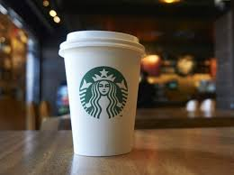
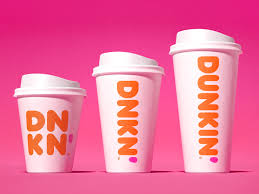
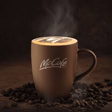
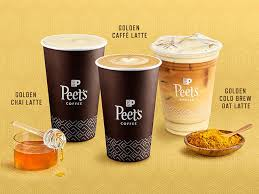
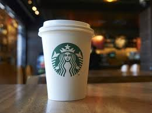
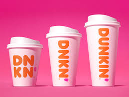
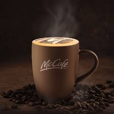
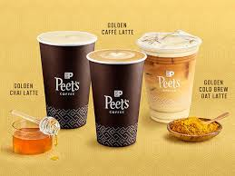

Cofee tastes better when it is strong!
Do you agree?
A 2017 review of clinical trials found that drinking coffee is generally safe within usual levels of intake and is more likely to improve health outcomes than to cause harm at doses of 3 or 4 cups of coffee daily. Exceptions include possible increased risk in women having bone fractures, and a possible increased risk in pregnant women of fetal loss or decreased birth weight. Results were complicated by poor study quality, and differences in age, gender, health status, and serving size.
TYPES
Coffee beans are the seeds of a fruit called a coffee cherry. Coffee cherries grow on coffee trees from a genus of plants called Coffea. There are a wide variety of species of coffee plants, ranging from shrubs to trees.
TOP BRANDS

1. Starbucks
The brand is not known for sourcing and roasting the best coffee beans. Most of their coffee beans are dark roasted, meaning, they taste bitter. And many consumers, who know their coffee, complain that Starbucks coffee has a distinct burnt taste.
2. Dunkin's Doughnut
They reinvented what coffee means to consumers on a daily basis. However, its true success lies in having taken the best parts of coffee chains like Starbucks and adapting them to the Dunkin' model of making trends fast, accessible, and affordable. All this has been phenomenally successful for Dunkin'.

3. McCafe
The first McDonald's McCafé concept was introduced in Swanson Street, in Melbourne's CBD in 1993 in recognition of Melbourne as Australia's coffee capital. Now, the brand has become an Aussie success story and global phenomenon, with 1,026 McCafé's across Australia and more than 4,000 in 60 countries across the world.
4. Peet's Coffee
In 1984, Jerry Baldwin, a Starbucks founder, bought Peet's four locations from Sal Bonavita. In 1987, Baldwin and his Starbucks co-investors sold Starbucks to focus on Peet's.Considered the "Big Bang of coffee," Peet's legacy includes sourcing the world's best beans, artisan roasting for a rich, premium taste, and crafting beverages.
GALLERY


|  | 1. StarbucksThe brand is not known for sourcing and roasting the best coffee beans. Most of their coffee beans are dark roasted, meaning, they taste bitter. And many consumers, who know their coffee, complain that Starbucks coffee has a distinct burnt taste. |
2. Dunkin's DoughnutThey reinvented what coffee means to consumers on a daily basis. However, its true success lies in having taken the best parts of coffee chains like Starbucks and adapting them to the Dunkin' model of making trends fast, accessible, and affordable. All this has been phenomenally successful for Dunkin'. |
 |
|  | 3. McCafeThe first McDonald's McCafé concept was introduced in Swanson Street, in Melbourne's CBD in 1993 in recognition of Melbourne as Australia's coffee capital. Now, the brand has become an Aussie success story and global phenomenon, with 1,026 McCafé's across Australia and more than 4,000 in 60 countries across the world. |
4. Peet's CoffeeIn 1984, Jerry Baldwin, a Starbucks founder, bought Peet's four locations from Sal Bonavita. In 1987, Baldwin and his Starbucks co-investors sold Starbucks to focus on Peet's.Considered the "Big Bang of coffee," Peet's legacy includes sourcing the world's best beans, artisan roasting for a rich, premium taste, and crafting beverages. |
 |
GALLERY
Have some Query?